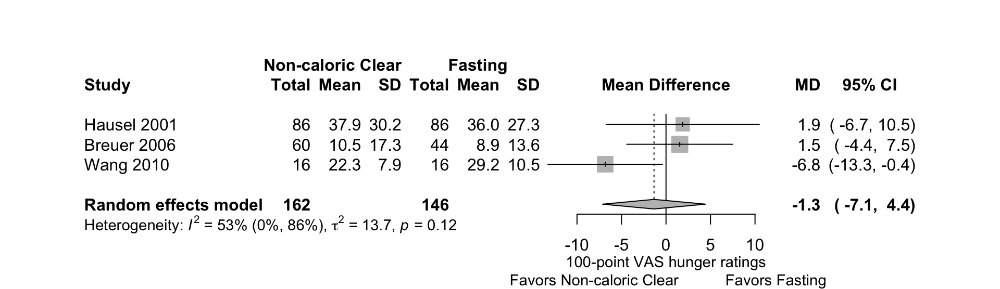
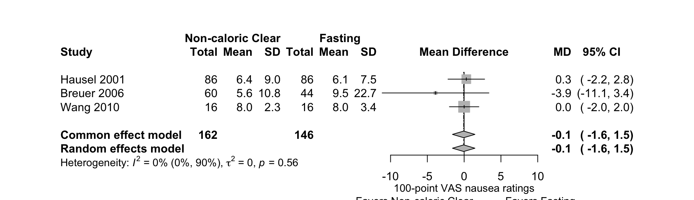
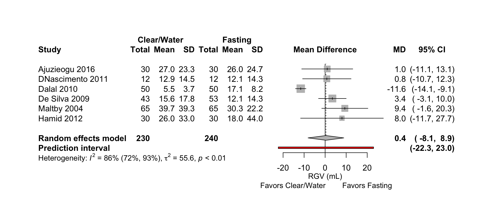

Non-caloric Clear Liquids vs. Fasting
05 October, 2021 (14:11)
Last updated: 2021-10-05
Checks: 7 0
Knit directory: Fasting/
This reproducible R Markdown analysis was created with workflowr (version 1.6.2). The Checks tab describes the reproducibility checks that were applied when the results were created. The Past versions tab lists the development history.
Great! Since the R Markdown file has been committed to the Git repository, you know the exact version of the code that produced these results.
Great job! The global environment was empty. Objects defined in the global environment can affect the analysis in your R Markdown file in unknown ways. For reproduciblity it’s best to always run the code in an empty environment.
The command set.seed(20201201) was run prior to running the code in the R Markdown file. Setting a seed ensures that any results that rely on randomness, e.g. subsampling or permutations, are reproducible.
Great job! Recording the operating system, R version, and package versions is critical for reproducibility.
Nice! There were no cached chunks for this analysis, so you can be confident that you successfully produced the results during this run.
Great job! Using relative paths to the files within your workflowr project makes it easier to run your code on other machines.
Great! You are using Git for version control. Tracking code development and connecting the code version to the results is critical for reproducibility.
The results in this page were generated with repository version b867ede. See the Past versions tab to see a history of the changes made to the R Markdown and HTML files.
Note that you need to be careful to ensure that all relevant files for the analysis have been committed to Git prior to generating the results (you can use wflow_publish or wflow_git_commit). workflowr only checks the R Markdown file, but you know if there are other scripts or data files that it depends on. Below is the status of the Git repository when the results were generated:
Ignored files:
Ignored: .DS_Store
Ignored: .Rhistory
Ignored: .Rproj.user/
Ignored: code/.DS_Store
Ignored: foot_unique.csv
Ignored: nauseaSimpCompl.csv
Ignored: nausea_cho.csv
Ignored: notes.txt
Ignored: outcome_list.txt
Untracked files:
Untracked: Marsman2021BJA_liberalizeFluids.pdf
Untracked: _@@/Carbohydrate Drinks.html
Untracked: _@@/Fasting-master_old.zip
Untracked: _site.yml_back
Untracked: all_arms.csv
Untracked: analysis/.gitignore
Untracked: analysis/american-medical-association.csl
Untracked: analysis/anesthesiology.csl
Untracked: analysis/cho.bib
Untracked: analysis/cho_nma.bib
Untracked: analysis/gum.bib
Untracked: analysis/jama.csl
Untracked: analysis/nma_final copy.Rmd
Untracked: analysis/nma_hunger_thirst.Rmd
Untracked: analysis/protein.bib
Untracked: cho_amts.csv
Untracked: cho_clin_rob_summary.svg
Untracked: cho_clin_rob_traffic.svg
Untracked: cho_refs.csv
Untracked: code/Untitled.R
Untracked: code/a_temp_to_run.R
Untracked: code/anchors_cho.txt
Untracked: code/anchors_prot.txt
Untracked: code/bayes_sensitivity.R
Untracked: code/bugsnet_test_script.R
Untracked: code/calc_mn_sd_med_iqr_range.R
Untracked: code/calculations.R
Untracked: code/cho_010420.Rmd
Untracked: code/cho_nausea.R
Untracked: code/clear_outcomes.R
Untracked: code/createCinemaFile.R
Untracked: code/discard.R
Untracked: code/fasting_descriptive.R
Untracked: code/functions.R
Untracked: code/gum_summary_070121.R
Untracked: code/helpers.R
Untracked: code/helpers_old.R
Untracked: code/hrs.R
Untracked: code/hungerRateClear.R
Untracked: code/meanLogFunctions.R
Untracked: code/metaHungerClear.R
Untracked: code/nma_debug_copy.R
Untracked: code/nma_sensitivity.R
Untracked: code/raw_log.R
Untracked: code/readFilesSummary_120220_wfr.R
Untracked: code/robGum.R
Untracked: code/rob_021121.R
Untracked: code/rob_protein.R
Untracked: code/rob_summary.R
Untracked: code/rob_summary_mg.R
Untracked: code/rob_traffic_light.R
Untracked: code/rob_traffic_light_mg copy.R
Untracked: code/rob_traffic_light_mg.R
Untracked: code/select_refids_summary.R
Untracked: code/simp_comp_code.R
Untracked: code/skeleton.bib
Untracked: code/snips.R
Untracked: code/summary_071921.html
Untracked: code/summary_arxiv_072221.Rmd
Untracked: code/summary_arxiv_072221.pdf
Untracked: code/summary_arxiv_072221.tex
Untracked: code/summary_gum_arxiv_072221.Rmd
Untracked: code/summary_gum_arxiv_072221.pdf
Untracked: code/summary_gum_arxiv_072221.tex
Untracked: code/summary_prot_arxiv_072221.Rmd
Untracked: code/summary_prot_arxiv_072221.pdf
Untracked: code/summary_prot_arxiv_072221.tex
Untracked: code/timePlot.R
Untracked: code/used_files_dates.txt
Untracked: data/CHOComplicationList_012521.xlsx
Untracked: data/CHOProteinDetail_031021.xlsx
Untracked: data/GumOutcomes_102820.xlsx
Untracked: data/GumOutcomes_102820_old.xlsx
Untracked: data/ProteinSOE_013121.xlsx
Untracked: data/ProteinSOE_121620.xlsx
Untracked: data/SOE_070621_final.xlsx
Untracked: data/SOE_CHO_051721_up.xlsx
Untracked: data/SOE_CHO_060721_up.xlsx
Untracked: data/SOE_CHO_060721_up_mg.xlsx
Untracked: data/SOE_Gum_020421.xlsx
Untracked: data/SOE_Protein_021021.xlsx
Untracked: data/_old/
Untracked: data/contOutcomes_2021-04-17-11-47-32.csv
Untracked: data/contOutcomes_2021-05-10-01-19-15.csv
Untracked: data/contOutcomes_2021-06-22-12-11-51.csv
Untracked: data/contOutcomes_2021-07-01-15-47-36.csv
Untracked: data/contOutcomes_2021-08-17-15-31-43.csv
Untracked: data/dichotOutcomes_2021-04-19-19-52-29.csv
Untracked: data/dichotOutcomes_2021-05-07-22-28-20.csv
Untracked: data/dichotOutcomes_2021-05-08-15-13-40.csv
Untracked: data/dichotOutcomes_2021-06-22-12-00-28.csv
Untracked: data/dichotOutcomes_2021-07-07-15-31-10.csv
Untracked: data/dichotOutcomes_2021-07-07-15-57-51.csv
Untracked: data/distillersr-Preoperative_Fasting_2020-07-08-17-59-49.xlsx
Untracked: data/fasting_table_add_102720.csv
Untracked: data/gum_soe_112120.xlsx
Untracked: data/hdi_072021.csv
Untracked: data/hunger_rob_summary.svg
Untracked: data/hunger_rob_traffic.svg
Untracked: data/incl_mg_distsr_fasting_2020-11-21_OLD.csv
Untracked: data/incl_mg_distsr_fasting_2021-03-09-17-42-12.csv
Untracked: data/likertOutcomes_2021-04-22-20-11-37.csv
Untracked: data/likertOutcomes_2021-05-01-19-43-21.csv
Untracked: data/likertOutcomes_2021-06-22-12-11-26.csv
Untracked: data/likertOutcomes_2021-06-28-19-44-27.csv
Untracked: data/likertOutcomes_2021-09-11-20-57-56.csv
Untracked: data/likertOutcomes_2021-09-13-14-20-13.csv
Untracked: data/protein_detail_102320.xlsx
Untracked: data/rob_2021-04-17-11-47-25.csv
Untracked: data/rob_2021-06-22-12-11-42.csv
Untracked: data/rob_2021-06-22-15-06-55.csv
Untracked: data/studyArm_2021-04-17-11-47-46.csv
Untracked: data/studyArm_2021-06-22-12-12-07.csv
Untracked: data/studyArm_2021-06-24-16-02-44.csv
Untracked: data/studyChar_2021-04-17-11-47-58.csv
Untracked: data/studyChar_2021-06-22-12-12-18.csv
Untracked: data/studyChar_2021-07-07-15-30-50.csv
Untracked: data/studyChar_2021-07-20-19-18-37.csv
Untracked: data/studyChar_2021-09-11-16-54-32.csv
Untracked: diff.csv
Untracked: figures/
Untracked: placebo.csv
Untracked: pt_char_table_cho.csv
Untracked: rgv_cinema.csv
Untracked: rgv_cinema_12.13_7_5_2021.cnm
Untracked: rgv_cinema_RoB_chart_old.png
Untracked: rgv_cinema_netplot_old.png
Untracked: rgv_cinema_random_MD_Report.csv
Untracked: rgv_meta_dat.csv
Untracked: study_char_table_cho.csv
Untracked: used_files_dates.txt
Unstaged changes:
Modified: analysis/_site.yml
Modified: analysis/cho_final.Rmd
Modified: analysis/nma_final.Rmd
Modified: analysis/protein_final.Rmd
Modified: analysis/soe_final.Rmd
Modified: code/README.md
Modified: code/readFiles_120220_wfr.R
Note that any generated files, e.g. HTML, png, CSS, etc., are not included in this status report because it is ok for generated content to have uncommitted changes.
These are the previous versions of the repository in which changes were made to the R Markdown (analysis/noncaloric_clear.Rmd) and HTML (docs/noncaloric_clear.html) files. If you’ve configured a remote Git repository (see ?wflow_git_remote), click on the hyperlinks in the table below to view the files as they were in that past version.
| File | Version | Author | Date | Message |
|---|---|---|---|---|
| Rmd | b867ede | Mark Grant | 2021-10-05 | wflow_publish(c(“analysis/noncaloric_clear.Rmd,” “analysis/index.Rmd”)) |
Clear vs. Fasting
Included Studies
Table 1. Number of included studies according to age, surgery, and design.
| Age | Patients | Design | N |
|---|---|---|---|
| Adult | Surgical | RCT | 18 |
| Nonrandomized | 2 | ||
| Retrospective Cohort | 1 | ||
| Case-Control | 1 | ||
| Adult | Non-surgical | Crossover | 1 |
| Pediatric | Surgical | RCT | 3 |
| Prospective Cohort | 1 | ||
| Total | 27 | ||
| RCT: randomized controlled trial. |
Surgical
Table 2. Studies of adults undergoing surgery (see References for citations).
| ID | Study | Analyzed (N) | Centers | Countrya | Surgery |
|---|---|---|---|---|---|
| Adult | |||||
| RCT | |||||
| 3823 | DNascimento 2011 | 50 | 1 | Brazila | Cholecystectomy |
| 3513 | DNascimento 2012b | 48 | 1 | Brazila | Cholecystectomy |
| 5310 | Maltby 2004 | 130 | 1 | Canada | Elective |
| 4014 | Wang 2010 | 52 | 1 | Chinaa | Colorectal |
| 160 | Shi 2020 | 63 | 1 | Chinaa | Colorectal |
| 4766 | Breuer 2006 | 160 | 1 | Germany | CABG |
| 3891 | Dalal 2010 | 100 | 1 | Indiaa | Gyn |
| 2482 | Singh 2015a | 20 | 1 | Indiaa | Maxillofacial |
| 2172 | Singh 2015b | 120 | 1 | Indiaa | Cholecystectomy |
| 6287 | Hamid 2012 | 150 | 1 | Irana | No details |
| 2564 | Sada 2014 | 142 | 1 | Kosovoa | Colorectal |
| 1768 | Ajuzieogu 2016 | 88 | 1 | Nigeriaa | Other GI |
| 926 | Lee 2018 | 139 | 1 | South Korea | Cholecystectomy |
| 4236 | De Silva 2009 | 96 | 1 | Sri Lankaa | Other GI |
| 5725 | Hausel 2001 | 252 | 3 | Sweden | Colorectal |
| 5091 | Hausel 2005 | 172 | 3 | Sweden | Cholecystectomy |
| 3371 | Ljunggren 2012 | 57 | 1 | Sweden | TKA/THA |
| 4810 | Noblett 2006 | 35 | 1 | UK | Colorectal |
| Nonrandomized Studies of Interventions | |||||
| 1678 | Xue 2017 | 129 | 1 | Chinaa | Other GI |
| 2675 | Ghorashi 2014 | 411 | 1 | Irana | Cesarean delivery |
| Retrospective Cohort | |||||
| 649 | Li 2019 | 1599 | 1 | Chinaa | Cesarean delivery |
| Case-Control | |||||
| 3456 | Power 2012 | 50 | 1 | Sweden | Colorectal |
| Pediatic | |||||
| RCT | |||||
| 7636 | Klemetti 2009/10 | 116 | 1 | Finland | Tonsillectomy/adenoidectomy |
| Prospective Cohort | |||||
| 1093 | Jayasinghe 2018 | 404 | 1 | Sri Lankaa | Bone marrow aspirate |
| RCT: randomized controlled trial. | |||||
| a Non very high Human Development Index country. | |||||
Nonsurgical
Table 3. Studies of healthy adults not undergoing surgery (see References for citations).
| ID | Study | Analyzed (N) | Centers | Countrya | Surgery |
|---|---|---|---|---|---|
| Crossover | |||||
| 7600 | Bisinotto 2017 | 80 | 1 | Brazila | None (healthy) |
| a Non very high Human Development Index country. | |||||
Patient Reported Outcomes
Preoperative Hunger
(For carbohydrate or protein clear liquid comparisons see carbohydrate and protein.)
Patient-rated (surgical)
Table 4. Patient-rated preoperative hunger — studies including non-caloric clear liquid and fasting arms — according to fasting, liquid and volume. (For comparisons with carbohydrate and protein containing liquids see carbohydrate and protein hunger results.)
| Study | Liquid | N | > 6 | 6→2 | 2 | Scalea | M (SD) | Med (IQR) | Range |
|---|---|---|---|---|---|---|---|---|---|
| Adult, Surgical | |||||||||
| RCT | |||||||||
| Hausel 2001 | Fasting | 86 | 0→100 | 35 (10-62) | (3-77) | ||||
| Placebo | 86 | 800 | 400 | 34 (10-68) | (3-84) | ||||
| CHO | 80 | 800 | 400 | 18 (5-42) | (1-73) | ||||
| Breuer 2006 | Fasting | 44 | 0→100 | 4 | (0-60) | ||||
| Placebo | 60 | 800 | 400 | 5 | (0-80) | ||||
| CHO | 56 | 800 | 400 | 3 | (0-100) | ||||
| Wang 2010b | Fasting | 16 | 0→100 | 28 | (13-50) | ||||
| Placebo | 16 | 400 | 22 | (9-37) | |||||
| CHO | 16 | 400 | 18 | (7-37) | |||||
| RCT: randomized controlled trial; M: mean; SD: standard deviation; Med: median; IQR: interquartile range; NRS: numeric rating scale. | |||||||||
| a Arrow (→) indicates best to worst hunger (visual analogue scale). | |||||||||
| b Change between 18 hours and 1 hour preop. | |||||||||
Pooled (adult RCTs, patient-rated)
Figure 1. Pooled mean difference in preoperative hunger ratings (100 point VAS) from randomized trials comparing non-caloric clear liquids with fasting in adult surgical patients.

Mean differences estimated using medians, interquartile ranges, and overall ranges.
Preoperative Thirst
(For carbohydrate or protein clear liquid comparisons see carbohydrate and protein.)
Rates (surgical)
Table 5. Rates of preoperative hunger according to fasting, liquid and volume.
| Study | Liquid | N | > 6 | 6→2 | 2 | N (%) | Clear vs. Comparator | |
|---|---|---|---|---|---|---|---|---|
| Pediatric, Surgical | ||||||||
| RCT | ||||||||
| Klemetti 2010b | Fasting | 52 | 11 (19) | 0.37 (0.12-1.16) | ||||
| Other clear | 55 | 216 | 227 | 5 (9) | ||||
| RCT: randomized controlled trial; OR: odds ratio; Non-cal: non-caloric. | ||||||||
Patient-rated (surgical)
Table 6. Patient-rated preoperative thirst according to fasting, liquid and volume.
| Study | Liquid | N | > 6 | 6→2 | 2 | Scalea | M (SD) | Med (IQR) | Range |
|---|---|---|---|---|---|---|---|---|---|
| Adult, Surgical | |||||||||
| RCT | |||||||||
| Hausel 2001 | Fasting | 86 | 0→100 | 40 (20-66) | (7-81) | ||||
| Placebo | 86 | 800 | 400 | 31 (14-65) | (4-79) | ||||
| CHO | 80 | 800 | 400 | 24 (7-42) | (3-70) | ||||
| Breuer 2006 | Fasting | 44 | 0→100 | 30 | (0-90) | ||||
| Placebo | 60 | 800 | 400 | 8 | (0-17) | ||||
| CHO | 56 | 800 | 400 | 7 | (0-75) | ||||
| Wang 2010b | Fasting | 16 | 0→100 | 34 | (19-60) | ||||
| Placebo | 16 | 400 | 17 | (6-53) | |||||
| CHO | 16 | 400 | 20 | (8-59) | |||||
| RCT: randomized controlled trial; M: mean; SD: standard deviation; Med: median; IQR: interquartile range; NRS: numeric rating scale. | |||||||||
| a Arrow (→) indicates best to worst thirst (visual analogue scale). | |||||||||
| b Change between 18 hours and 1 hour preop. | |||||||||
Pooled (adult RCTs, patient-rated)
Figure 2. Pooled mean difference in preoperative thirst ratings (100 point VAS) from randomized trials comparing non-caloric clear liquids with fasting in adult surgical patients.

Mean differences estimated using medians, interquartile ranges, and overall ranges.
Preoperative Nausea
(For carbohydrate or protein clear liquid comparisons see carbohydrate and protein.)
Patient-rated (surgical)
Table 7. Patient-rated preoperative nausea according to fasting, liquid and volume.
| Study | Liquid | N | > 6 | 6→2 | 2 | Scalea | M (SD) | Med (IQR) | Range |
|---|---|---|---|---|---|---|---|---|---|
| Adult, Surgical | |||||||||
| RCT | |||||||||
| Hausel 2001 | Fasting | 86 | 0→100 | 4 (2-12) | |||||
| Placebo | 86 | 800 | 400 | 5 (1-13) | |||||
| CHO | 80 | 800 | 400 | 4 (2-7) | |||||
| Breuer 2006 | Fasting | 44 | 0→100 | 0 | (0-100) | ||||
| Placebo | 60 | 800 | 400 | 2 | (0-50) | ||||
| CHO | 56 | 800 | 400 | 0 | (0-30) | ||||
| Wang 2010b | Fasting | 16 | 0→100 | 8 | (2-14) | ||||
| Placebo | 16 | 400 | 8 | (4-12) | |||||
| CHO | 16 | 400 | 8 | (4-11) | |||||
| RCT: randomized controlled trial; M: mean; SD: standard deviation; Med: median; IQR: interquartile range; NRS: numeric rating scale. | |||||||||
| a Arrow (→) indicates best to worst nausea (visual analogue scale). | |||||||||
| b Change between 18 hours and 1 hour preop. | |||||||||
Pooled (adult RCTs, patient-rated)
Figure 3. Pooled mean difference in preoperative nausea ratings (100 point VAS) from randomized trials comparing non-caloric clear liquids with fasting in adult surgical patients.

Mean differences estimated using medians, interquartile ranges, and overall ranges.
Discomfort
(For carbohydrate or protein clear liquid comparisons see carbohydrate and protein.)
Patient-rated (surgical)
Table 8. Patient-rated preoperative comfort according to fasting, liquid and volume.
| Study | Liquid | N | > 6 | 6→2 | 2 | Scalea | M (SD) | Med (IQR) | Range |
|---|---|---|---|---|---|---|---|---|---|
| Adult, Surgical | |||||||||
| RCT | |||||||||
| De Silva 2009 | Fasting | 53 | 0→10 | 9.7 (10-10) | |||||
| Water | 43 | 5.6 (4-8) | |||||||
| Lower water clear p ≤ 0.0001 | |||||||||
| RCT: randomized controlled trial; M: mean; SD: standard deviation; Med: median; IQR: interquartile range. | |||||||||
| a Arrow (→) indicates best to worst comfort (10-point visual analogue scale). | |||||||||
Patient Satisfaction
(For carbohydrate or protein clear liquid comparisons see carbohydrate and protein.)
Not reported in any studies.
Clinical Outcomes
Aspiration
(For carbohydrate or protein clear liquid comparisons see carbohydrate and protein.)
Adults
Table 9. Studies including comparison of non-caloric clear liquids with fasting and reporting no occurrence of aspiration in adults — number of participants according to liquid received.
| Study | Fasting | Water | Placebo | Other clear | CHO | CHO/Prot | Total |
|---|---|---|---|---|---|---|---|
| Adult | |||||||
| RCT | |||||||
| Hausel 2001 | 86 | 86 | 80 | 252 | |||
| Breuer 2006 | 44 | 60 | 56 | 160 | |||
| Wang 2010 | 16 | 16 | 16 | 48 | |||
| Singh 2015a | 5 | 5 | 5 | 5 | 20 | ||
| Lee 2018 | 49 | 44 | 46 | 139 | |||
| Shi 2020 | 21 | 21 | 21 | 63 | |||
| Total | 221 | 5 | 227 | 224 | 5 | 682 | |
| Nonrandomized Studies of Interventions | |||||||
| Ghorashi 2014 | 144 | 267 | 411 | ||||
| Total | 144 | 267 | 411 | ||||
| Overall | 365 | 5 | 227 | 267 | 224 | 5 | 1093 |
| RCT: randomized controlled trial; CHO: carbohydrate; Prot: protein. | |||||||
Pediatric
Table 10. Studies including comparison of non-caloric clear liquids with fasting and reporting no occurrence of aspiration in children — number of participants according to liquid received.
| Study | Fasting | Other Clear | Total |
|---|---|---|---|
| No Aspiration | |||
| RCT | |||
| Klemetti 2010aa | 58 | 58 | 116 |
| Total | 58 | 58 | 116 |
| Overall | 58 | 58 | 116 |
| RCT: randomized controlled trial. | |||
| a Study did not specify precise liquid and that juices were allowed. | |||
Adults Unreported
Table 11. Studies including comparison of non-caloric clear liquids with fasting in adults and silent on whether or not aspiration occurred.
| Study | Fasting | Water | Placebo | Other clear | CHO | CHO/Prot | Total |
|---|---|---|---|---|---|---|---|
| Adult | |||||||
| RCT | |||||||
| Hausel 2005 | 58 | 59 | 55 | 172 | |||
| Dalal 2010 | 50 | 50 | 100 | ||||
| DNascimento 2012b | 12 | 12 | 12 | 12 | 48 | ||
| Ljunggren 2012 | 20 | 18 | 19 | 57 | |||
| Singh 2015b | 40 | 40 | 40 | 120 | |||
| Total | 180 | 80 | 99 | 126 | 12 | 497 | |
| Retrospective Cohort | |||||||
| Li 2019 | 501 | 1098 | 1599 | ||||
| Total | 501 | 1098 | 1599 | ||||
| Overall | 681 | 80 | 99 | 1098 | 126 | 12 | 2096 |
| RCT: randomized controlled trial; CHO: carbohydrate; Prot: protein. | |||||||
Pediatric Unreported
Table 12. Studies including comparison of non-caloric clear liquids with fasting in children and silent on whether or not aspiration occurred.
| Study | Fasting | Other Clear | Total |
|---|---|---|---|
| Pediatric | |||
| Prospective Cohort | |||
| Jayasinghe 2018a | 202 | 202 | 404 |
| Total | 202 | 202 | 404 |
| a Type of clear liquid not specified. | |||
Preoperative Regurgitation
Adults (surgical)
Table 13. Rates of regurgitation (preoperative) in adults according to fasting, liquid and volume.
| Study | Liquid | N | > 6 | 6→2 | 2 | N (%) | CHO vs. Fasting | |
|---|---|---|---|---|---|---|---|---|
| Adult, Surgical | ||||||||
| RCT | ||||||||
| DNascimento 2012b | Fasting | 12 | 0 (0) | |||||
| Water | 12 | 400 | 200 | 0 (0) | ||||
| CHO/Prot | 12 | 400 | 200 | 0 (0) | ||||
| CHO | 12 | 400 | 200 | 0 (0) | ||||
| Singh 2015a | Fasting | 5 | 0 (0) | |||||
| Water | 5 | 400 | 200 | 0 (0) | ||||
| CHO/Prot | 5 | 400 | 200 | 0 (0) | ||||
| CHO | 5 | 400 | 200 | 0 (0) | ||||
| Nonrandomized Studies of Interventions | ||||||||
| Ghorashi 2014 | Fasting | 144 | 1 (1) | 0.54 (0.03-8.66) | ||||
| Other clear | 267 | 150 | 1 (0) | |||||
| RCT: randomized controlled trial; OR: odds ratio; CHO: carbohydrate; Prot: protein. | ||||||||
Pediatric (surgical)
Not reported in any studies.
Preoperative Vomiting
Not reported in any studies for adults or children.
Residual Gastric Volume
Adults (surgical)
Table 14. Residual gastric volumes measured by aspiration at induction in studies of adult surgical patients according to fasting, liquid and volume.
| Study | Liquid | N | > 6 | 6→2 | 2 | M (SD) | Med (IQR) | M or Med |
|---|---|---|---|---|---|---|---|---|
| Adult, Surgical | ||||||||
| RCT | ||||||||
| Maltby 2004b | Fasting | 65 | ||||||
| Other clear | 65 | 300 | ||||||
| De Silva 2009 | Fasting | 53 | ||||||
| Water | 43 | |||||||
| Dalal 2010 | Fasting | 50 | 17 (8) | |||||
| Water | 50 | 150 | 6 (4) | |||||
| DNascimento 2011 | Fasting | 12 | 12 | 5 (0.0-13) | ||||
| Water | 12 | 400 | 200 | 13 | 8 (4.8-19) | |||
| CHO/Prot | 14 | 400 | 200 | 5 | 4 (1.8-8.0) | |||
| CHO | 12 | 400 | 200 | 13 | 7 (1.7-8.2) | |||
| Hamid 2012 | Fasting | 30 | 18 (44) | |||||
| Water | 30 | 26 (33) | ||||||
| Gum sugared | 30 | 25 (27) | ||||||
| Gum sugar-free | 30 | 27 (27) | ||||||
| Lollipop | 30 | 20 (27) | ||||||
| Ajuzieogu 2016 | Fasting | 30 | 26 | |||||
| Water | 30 | 800 | 400 | 27 | ||||
| CHO | 28 | 800 | 400 | 24 | ||||
| Nonrandomized Studies of Interventions | ||||||||
| Xue 2017 | Fasting | 64 | ||||||
| Other clear | 65 | |||||||
| RGV: residual gastric volumne; M: mean; SD: standard deviation; Med: median; IQR: interquartile range; CHO: carbohydrate; Prot: protein; RCT: randomized controlled trial. | ||||||||
| a RGV measured at induction in all studies. | ||||||||
| b Clear liquids included water, apple juice, black coffee, clear tea, and carbonated beverage. | ||||||||
Pediatric
Not reported in any studies.
Pooled (adult RCTs)
Figure 4. Pooled residual gastric volume from randomized trials comparing carbohydrate drinks (excludes protein containing) with fasting in adult surgical patients.

Mean differences estimated from means, standard deviations, medians, interquartile and overall ranges. Owing to skewed distributions of RGV, conducted sensitivity analysis on a log scale with consistent results.
Gastric pH
Complications
Length of Stay
Study/Participant Detail
Study Characteristics
Sample Characteristics
Fasting, Liquid Timing and Amounts
Funding
Risk of Bias
References
R version 4.1.1 (2021-08-10)
Platform: x86_64-apple-darwin17.0 (64-bit)
Running under: macOS Big Sur 10.16
Matrix products: default
BLAS: /Library/Frameworks/R.framework/Versions/4.1/Resources/lib/libRblas.0.dylib
LAPACK: /Library/Frameworks/R.framework/Versions/4.1/Resources/lib/libRlapack.dylib
locale:
[1] en_US.UTF-8/en_US.UTF-8/en_US.UTF-8/C/en_US.UTF-8/en_US.UTF-8
attached base packages:
[1] stats graphics grDevices utils datasets methods base
other attached packages:
[1] netmeta_1.5-0 meta_4.19-2 formattable_0.2.1 naniar_0.6.1
[5] forcats_0.5.1 stringr_1.4.0 dplyr_1.0.7 purrr_0.3.4
[9] readr_2.0.2 tidyr_1.1.4 tibble_3.1.5 ggplot2_3.3.5
[13] tidyverse_1.3.1 Cairo_1.5-12.2 countrycode_1.3.0 janitor_2.1.0
[17] kableExtra_1.3.4 multinma_0.3.0 workflowr_1.6.2
loaded via a namespace (and not attached):
[1] minqa_1.2.4 colorspace_2.0-2 ellipsis_0.3.2
[4] visdat_0.5.3 evd_2.3-3 rprojroot_2.0.2
[7] snakecase_0.11.0 fs_1.5.0 rstudioapi_0.13.0-9000
[10] rstan_2.21.2 bit64_4.0.5 fansi_0.5.0
[13] lubridate_1.7.10 mathjaxr_1.4-0 xml2_1.3.2
[16] codetools_0.2-18 splines_4.1.1 knitr_1.36
[19] jsonlite_1.7.2 nloptr_1.2.2.2 broom_0.7.9
[22] dbplyr_2.1.1 compiler_4.1.1 httr_1.4.2
[25] backports_1.2.1 assertthat_0.2.1 Matrix_1.3-4
[28] fastmap_1.1.0 cli_3.0.1 later_1.3.0
[31] htmltools_0.5.2 prettyunits_1.1.1 tools_4.1.1
[34] igraph_1.2.6 gtable_0.3.0 glue_1.4.2
[37] V8_3.4.2 Rcpp_1.0.7 cellranger_1.1.0
[40] jquerylib_0.1.4 vctrs_0.3.8 svglite_2.0.0
[43] nlme_3.1-153 xfun_0.26 rbibutils_2.2.3
[46] ps_1.6.0 lme4_1.1-27.1 rvest_1.0.1
[49] CompQuadForm_1.4.3 lifecycle_1.0.1 MASS_7.3-54
[52] scales_1.1.1 vroom_1.5.5 hms_1.1.1
[55] promises_1.2.0.1 parallel_4.1.1 inline_0.3.19
[58] metafor_3.0-2 yaml_2.2.1 curl_4.3.2
[61] gridExtra_2.3 loo_2.4.1 StanHeaders_2.21.0-7
[64] sass_0.4.0 truncdist_1.0-2 stringi_1.7.4
[67] highr_0.9 boot_1.3-28 pkgbuild_1.2.0
[70] Rdpack_2.1.2 rlang_0.4.11 pkgconfig_2.0.3
[73] systemfonts_1.0.2 matrixStats_0.61.0 evaluate_0.14
[76] lattice_0.20-45 htmlwidgets_1.5.4 bit_4.0.4
[79] processx_3.5.2 tidyselect_1.1.1 magrittr_2.0.1
[82] R6_2.5.1 generics_0.1.0 DBI_1.1.1
[85] pillar_1.6.3 haven_2.4.3 whisker_0.4
[88] withr_2.4.2 abind_1.4-5 modelr_0.1.8
[91] crayon_1.4.1 utf8_1.2.2 tzdb_0.1.2
[94] rmarkdown_2.11 grid_4.1.1 readxl_1.3.1
[97] callr_3.7.0 git2r_0.28.0 reprex_2.0.1
[100] digest_0.6.28 webshot_0.5.2 httpuv_1.6.3
[103] RcppParallel_5.1.4 stats4_4.1.1 munsell_0.5.0
[106] viridisLite_0.4.0 bslib_0.3.0 magic_1.5-9